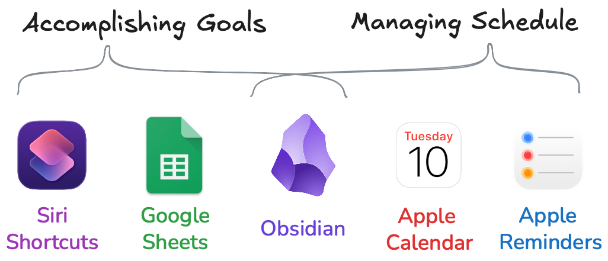
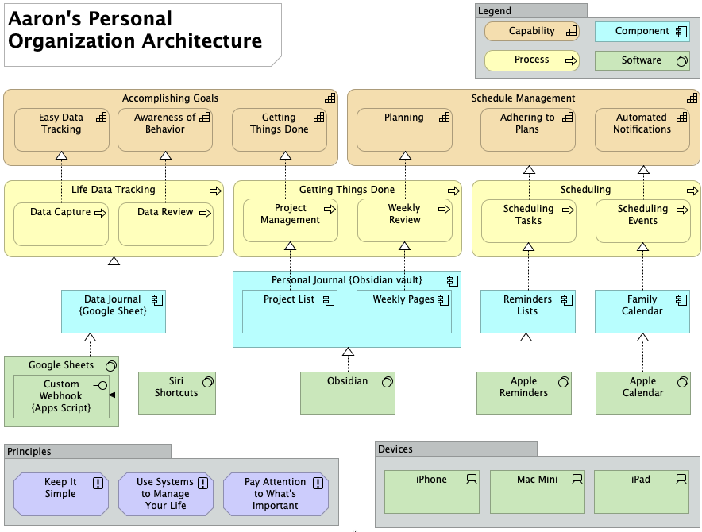
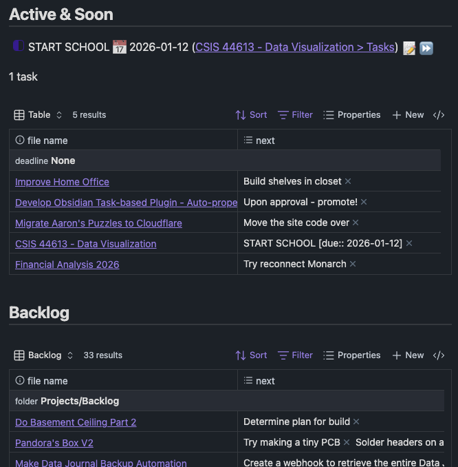

This is the 4th iteration1 of this Column. I’m writing this because I finally feel like I “cracked the nut” with respect to an Obsidian-based project management system. This is not a dramatic re-design of the system, more like a point upgrade.
Aaron Information Management (AIM) 3.1
TL;DR

What's New
- AIM 3.0 was designed before Obsidian Bases - AIM 3.1 uses them
- My new dashboard & project/tasks approach is screenshotted below
- The Data Journal is unchanged
Archimate
Here’s my architecture represented in Archimate - for fun, not because it’s particularly useful.

I had to stop myself from diving into that and making multiple views showing each thing in detail. If even one person says “I’d like to see that”, I’ll map out the whole thing and nuke an entire day.Obsidian Project Management
I finally found an Obsidian-based project management system that genuinely works for me. It’s resulted in a simplified Obsidian vault and the creation of my second-ever Obsidian plugin.
This is the view that makes it all work for me:

I finally have a project management dashboard that pays for itself. Instead of requiring manual updates, it’s powered by automated queries built to match my natural workflow within each project. I’m no longer maintaining a dashboard; I’m just doing my work, and the dashboard handles itself. It’s the most effective “things I could be doing right now” solution I’ve ever come up with.
Those tables also include a + New button, which creates a new project directly in active or backlog directories. Doing this is a natural way to add a new project to the list and has become the primary way I add new projects.
The “Next” Revolution
I’ve finally figured out what David Allen was saying in his book with regard to Projects and Next Actions. For years I’ve treated “projects” as just larger-scale tasks that require multiple steps to complete. However - up until recently I never found a good, helpful way to really see the tasks inside I project. I found solutions that showed Project name only, and I found solutions that showed Project name + every task it contains, which makes the list overwhelming and crowded with noise. What I needed was a dashboard of where I was at within the scope of the project, and what’s currently actionable to move the project forward.
In essence, I changed my mental framing of “next action” from “I’m not working on this, but if I were this is the next thing I’d do” to something more like “I AM working on this, and this is what’s next”. Somehow this mental switch was flipped and now I see the light.
What I need was a simple list of open projects, and a way to “promote” the next thing(s) I could do right now to move them toward completion. I tinkered around with lots of community plugins2 and various setups for Obsidian, but ultimately what I needed was something very simple… that didn’t exist.
Auto-Properties - My 2nd Obsidian Plugin
I introduced this in my year in review post, but the key that unlocked my Projects Dashboard is a plugin I developed for Obsidian that does a very simple thing. It copies specific content from the body of a note to that note’s properties based on rules you define.
Transclude of https//www.youtube.com/watchv=ipdsfyfxp4y
You could have a property that says “count the number of lines containing the word ‘cactus’”, and once you set it up, you just write and your cactus_count property will update itself.
In my case, I have an Auto-property that looks for all lines of a note that begin with an in-progress task string, and will copy those lines into the property I’ve made in my project note template titled next. I’m not manually copy/pasting things to make them show up on the dashboard. I’m not changing what I would have done otherwise - I’m just ticking the box as “in progress” and that makes the task show up in the dashboard.
Example
---
next: ["I'm automatically placed in the 'next' property becuase I'm in-work"]
---
Scope
- This is a demo project
This body of the project can contain whatever content I want.
- [x] I'm a complete task. I'll be ignored by the rule to pull active tasks.
- [/] I'm automatically placed in the 'next' property becuase I'm in-work
- [ ] I'm a planned future task that Aaron can't do anything about yet, I'm ignored by the rule, too
Complete Vault Overview
See my new Creations entry → Obsidian-based Project Management System
Reminders & Calendar
Obsidian does not manage time-based things. It’s a scope-based management system. I manage events in a calendar (obviously), and I use time-bound/date-bound/location-bound reminders to make sure I’m doing things I need to do when I need to do them.
Example
- Paying the bills - in reminders, not in Obsidian
- Doctor’s appointment - in the calendar, not in Obsidian
Data Journal
The Data Journal is almost wholly unchanged in the past year. Just this week I added a new sheet to keep track of visits to the doctor & dentist, though. Those should have been there all along, but the 2nd best time to plant a tree is today. I’m including this section for pseudo-completeness. One ambition for 2026 is to create a Data Journal overview (series of) video(s) to explain what it is, why I built it, how I use it, and how you could build one for yourself. It’s something I’ll wait until after graduation to do, though, because I don’t want to make a video unless I can do it to a level of quality I’ll be proud of - and that takes time & effort. In the meantime, there’s always this page I wrote explaining it.
Today is data journal day number 4644, by the way.
Top 5: Additional Old Man Opinions
Some things not covered in Column 480.
5. Auto-correct shouldn’t “correct” valid words
I played “Blue Prince” recently. I was writing notes in my iPad during the game, and it kept “correcting” the name “Epsen” to “Epstein”. This is one tiny example of auto-correct being more in the way than helpful.
4. Simpler better
The simpler things are, the better they are. I don’t want tons of flash and flair. I want something that works & I don’t have to worry about breaking. I’m not 100% sure this qualifies as an “old man” opinion, but whatever I’m counting it.
3. Bars suck
Going to a bar is: 1) loud 2) expensive 3) hostile 4) not for me. I’d rather have friends over, where we can talk and enjoy each others company without needing to spend more money than necessary.
2. AI is annoying and ruining things
I liked it back when I could believe videos I watched were genuine. I don’t want Alexa commentating on the timer I just told her to set. I don’t want to use copilot, please. I’d like AI to be something I go to to use, rather than have a modern version of clippy.
1. Life is too short
I don’t have time to care about things that don’t matter.
Quote:
QuikTrip has them I believe, only use in case of emergency because they cause other emergencies.
- Fintel, about bomb burritos